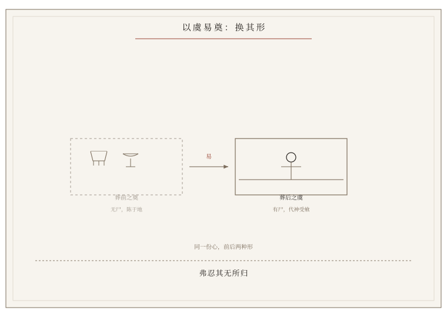

檀弓下 · 四·三十 · 第 355 课
葬日虞，弗忍一日离也。是月也，以虞易奠。卒哭曰「成事」。
说什么事：葬的当日就行虞祭，是不忍让亲有一日无所归；就在这一月，以虞祭换下奠；到卒哭那一祭，祝辞称「成事」。
落在哪一层：以「归」量礼。论「孝子的不忍，正是礼的起点」。
为何编在此位：上节言虞之前备，此节正言虞之所以不得不速。备既具，则言其故。
【经】葬日虞，弗忍一日离也。是月也，以虞易奠。卒哭曰「成事」。
【注】弗忍其无所归。／虞，丧祭也。／既虞之后，卒哭而祭，其辞盖曰「哀荐成事」，成祭事也。祭以吉为成。
【疏】既虞祭之后，至于卒哭，其卒哭祭辞，盖曰「成事」。所以称「盖」者，以其《士虞礼》无文，唯《杂记》及此有卒哭成事，故郑约之为解，又称「盖」以疑之。／以虞祭之时，以其尚凶，祭礼未成。今既卒无时之哭，唯有朝夕二哭，渐就于吉，故云「成事」，祭以吉为成故也。／其虞与卒哭，尊卑不同。案《杂记》：「士三月而葬，是月而卒哭。大夫三月而葬，五月而卒哭。诸侯五月而葬，七月而卒哭。」又《杂记》云：「内此天子七月而葬，九月而卒哭。」《杂记》又云：「诸侯七虞，大夫五，士三。」／谓之「虞」者，郑注《士虞礼》云：「虞，安也，所以安神。」虞皆用柔日。柔日者，郑注《士虞礼》云：「柔日阴，阴取其静。」最后一虞用刚日。故《士虞记》云：「三虞卒哭，他用刚日。」郑注云：「用刚日，刚日，阳也。阳取其动。」谓动而将祔庙也。
葬日虞 葬的当日即行虞祭。士之礼如此。
离 疏读为「其无所归」。离者，离其依。
是月 葬之月。士三月葬，即三月卒哭，故虞与卒哭同月。
易 替换。以虞易奠，不是废止奠，是换一种供给。
卒哭 止无时之哭，唯存朝夕二哭。
成事 祭事成。疏云「祭以吉为成」，故成事即「渐就于吉」之名。
柔日／刚日 柔日阴，取静；刚日阳，取动。
葬的当日就行虞祭，是不忍让亲有一日无所归依。就在这一月，以虞祭换下原来的奠。到卒哭之祭，祝辞称「成事」——祭事到此处才算是成了。
此章三句，是丧礼的一次换挡。
第一句说「为什么这么快」：不是赶日子，是不忍一日无归。 第二句说「换什么」：以虞易奠——由奠转祭。 第三句说「称什么」：卒哭曰成事——由凶转吉。
三句连读，可见礼的加速度不由日历决定，由「不忍」决定。
第一层 弗忍一日离：礼的起点是不忍 葬毕，形已入土，神尚无依。若待择日而后祭，则亲有一日、二日、乃至数日悬空。
故礼定「葬日虞」。这一条不是从「吉凶之序」推出的，是从「不忍」推出的。
此句最要紧：礼的许多「速」，都不是为了快，而是为了不让某个人多受一日之苦。
第二层 虞者，安也 郑注《士虞礼》：「虞，安也，所以安神。」
名之为「虞」，义即「安」。不是慰生者，是先安死者。
今人办丧，多把「安」落在生者身上：安慰家属、安排后事。古人先问一句：亡者今在何处安？此问不问，余事皆浮。
第三层 以虞易奠：供给方式一变 葬前曰奠，无尸，陈于地；葬后曰虞，有尸，代神受飨。
同一份心意，前后两种形：一为「置于此」，一为「有人受之」。
形式之换，不是形式主义。形式不对，心意就到不了。
第四层 卒哭曰成事：吉凶的分界在哪 疏云「虞祭之时，以其尚凶，祭礼未成」；「今既卒无时之哭，唯有朝夕二哭，渐就于吉，故云成事」。
分界不在「哭与不哭」，在「无时之哭与朝夕之哭」。无时之哭，哀不受节；朝夕二哭，哀已入节。
故「成事」不是事完了，是事立住了。 哀有了节度，祭才有了形体，这才叫「成」。
第五层 柔日刚日：静而后动 虞用柔日，取阴之静；末一虞用刚日，取阳之动，「动而将祔庙也」。
先静而后动，是丧礼的一个通例：先把神安下来，再让神往前进。
今人处事急于「推进」，往往未安先动，动而无根。此一节的反面教材极清楚。
与今日何干 今有丧，多止于葬。此节提示：葬不是终点，是「安」的开始；要有一次正式的「安」——不论名之为虞、为追思、为安灵，其义在使亡者有一位、使生者有一处可往。
| 左 | 右 |
|---|---|
| 葬日虞 | 不忍一日无归 |
| 虞 | 安神之祭 |
| 奠 | 无尸，陈于地 |
| 虞 | 有尸，代神受飨 |
| 以虞易奠 | 换其形，不废其心 |
| 卒哭 | 止无时之哭 |
| 成事 | 祭以吉为成 |
| 柔日 | 阴，取静 |
| 刚日 | 阳，取动，将祔 |
画一座新坟与坟前的一方空地，视点平视略俯。坟丘圆缓，坟前空地上摊着一领席。席上原置的几与祭器已被移开，只留席面与两道压痕，示意「奠已易」。画面右上一角，画一座极简的屋舍轮廓（只一道横脊、两根立柱），示殡宫方向。不画人物，不画连线。赭色只用在席边一道细边。
